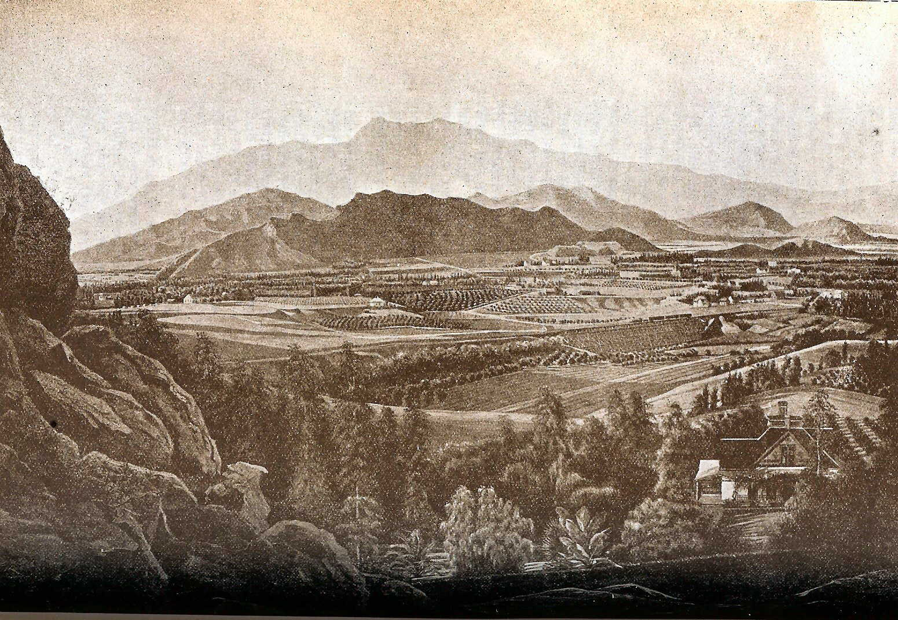

Links
Pioneers of San Bernardino – Links to biographies of members of San Bernardino’s Pioneer Society, most of whom arrived in the 1850s.
Native Daughters of the Golden West California Pioneer Project Master Surname Index – Names of Californians who resided in, or who were born in California before 1870.
San Bernardino Bibliography and Related Links of Interest – Books, biographies, essays about San Bernardino’s Mormon roots, including links to the Mississippi Company, Brooklyn Saints, and Mormon Battalion.
Mary Lewis Collection – Names of early San Bernardino History residents, compiled from a wide variety of the earliest records. Information from the files of the 35,000 named is available at the City of San Bernardino Historical and Pioneer Society located in the California Room at the San Bernardino Public Library. (The collection will eventually be viewable on-line at FamilySearch.org).
